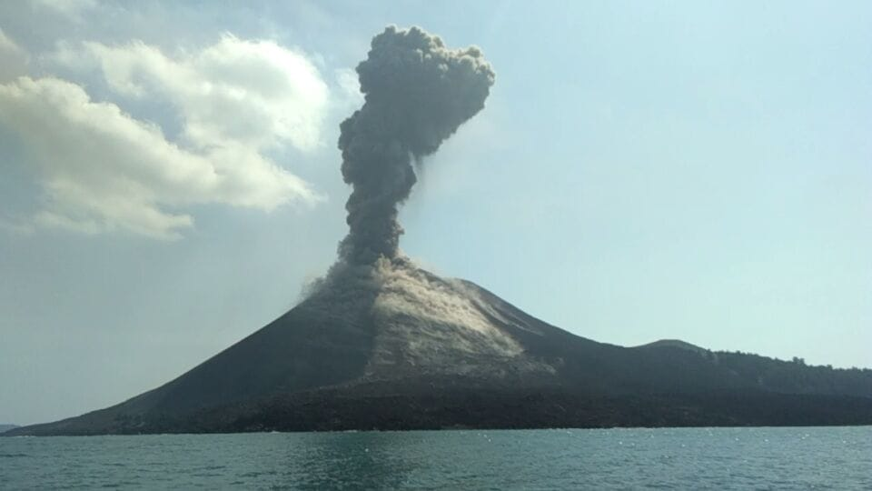
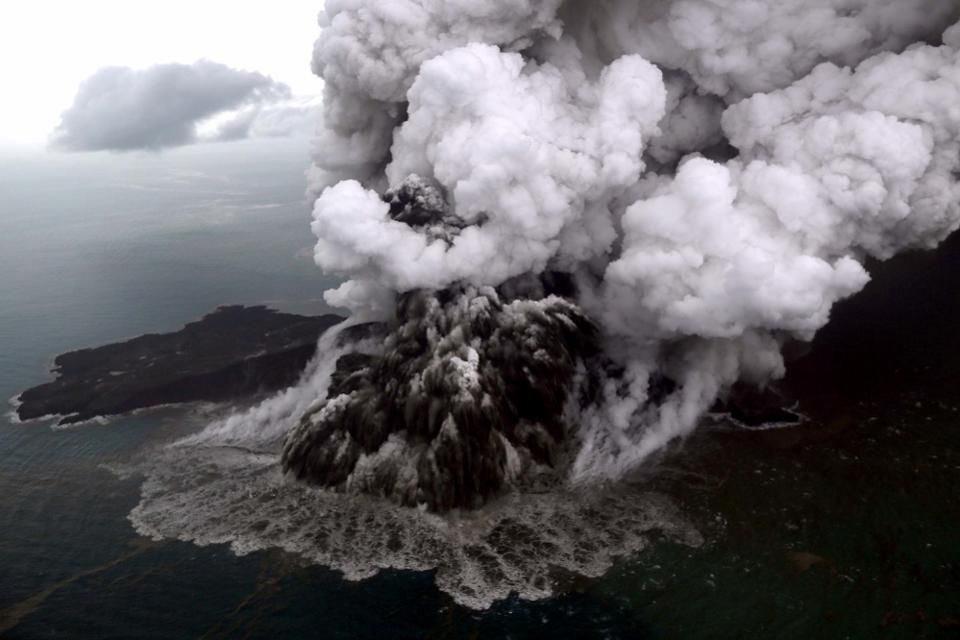
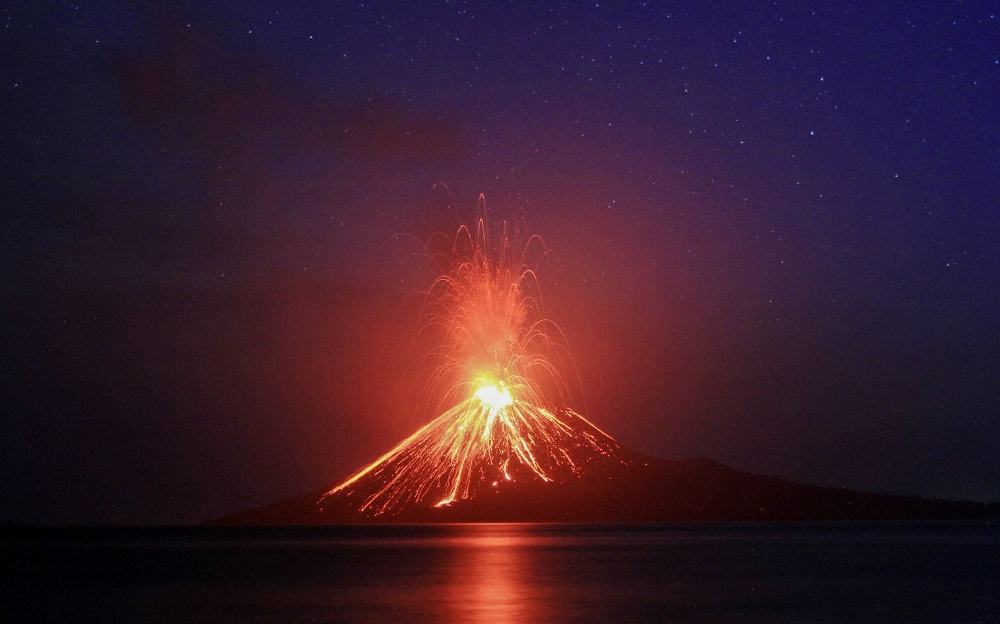

Krakatau
Krakatoa, Indonesian Krakatau, volcano on Rakata Island in the Sunda Strait between Java and Sumatra, Indonesia.
Sometime within the past million years, the volcano built a cone-shaped mountain composed of flows of volcanic rock alternating with layers of cinder and ash. From its base, 1,000 feet (300 metres) below sea level, the cone projected about 6,000 feet (1,800 metres) above the sea. Later (possibly in AD 416), the mountain’s top was destroyed, forming a caldera, or bowl-shaped depression, 4 miles (6 km) across. Portions of the caldera projected above the water as four small islands: Sertung (Verlaten) on the northwest, Lang and Polish Hat on the northeast, and Rakata on the south. Over the years, three new cones were formed, merging into a single island. The highest of the three cones rose to 2,667 feet (813 metres) above sea level.


